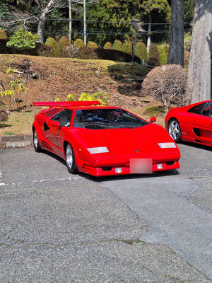
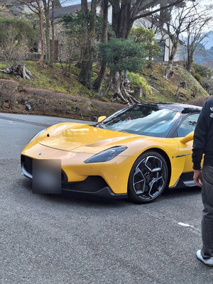
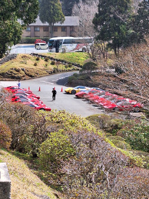
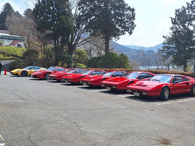
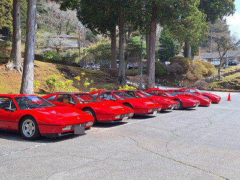
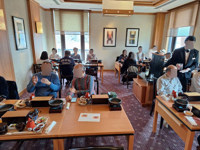
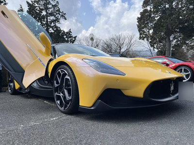
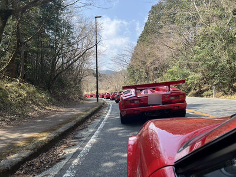

山下公園（横浜）
これはテスト用の原稿です。
毎年恒例の横浜ツーリングですが、今年は前泊組との集合場所でとあるクラシックカーラリーの見学もできました。普段なかなか見る事のない名車の走行シーンを、思いがけなく見ることができました。
朝方までの雨も止み、曇り空の中、少し遠回りしながら目的地の山下公園までツーリングを行いました。
328が6台、その他4台、計10台16名の参加となりました。







